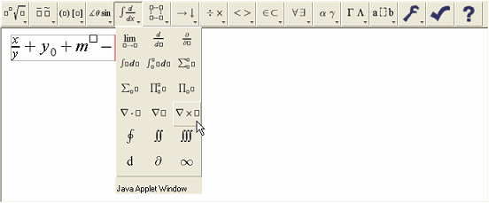
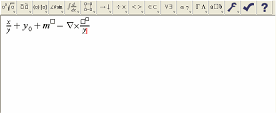
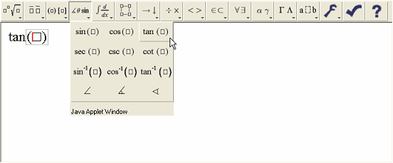

The WebEQ Input Control is an equation editor applet. It is based on the idea of an equation template. There are templates for fractions, subscripts, superscripts, matrices, etc. To build an equation, insert templates, and then fill in the blanks.

To fill in the blanks in templates, enter letters and numbers from the keyboard, select symbols from a pulldown palette on the toolbar. You can also fill in a blank with another template.
By nesting equation templates inside one another, you can build up almost any equation. Navigate around an equation using the mouse and arrow keys. Cut and paste subexpressions to edit even very complex expressions.

All of the templates and symbols are directly based on MathML. See the WebEQ Developers Suite documentation for more information about MathML.
The WebEQ Input Control tries to make cursor movement as natural and as intuitive as possible. In general, the left, right, up and down arrows move the cursor to the next valid insertion point in the corresponding direction. Similarly, clicking the mouse anywhere in an equation moves the cursor to the closest valid location to the click.
Behind the scenes, the WebEQ Input Control is negotiating a complicated nested structure of MathML templates. Moving the cursor one position to the right on the screen can involve jumping in and out of MathML structures.
The cursor may occasionally not move exactly as you would expect on account of the nesting of the MathML structure. In these cases, the cursor movement is giving you additional information about the structure of your equation.
Watch the gray box attached to the cursor. The gray box indicates the current template in which the cursor is located. Usually, unexpected cursor motion is the result of moving in and out of templates.
To enter a symbol in an equation, click on it on the toolbar, or select it from one of the symbol palettes, also on the toolbar.
